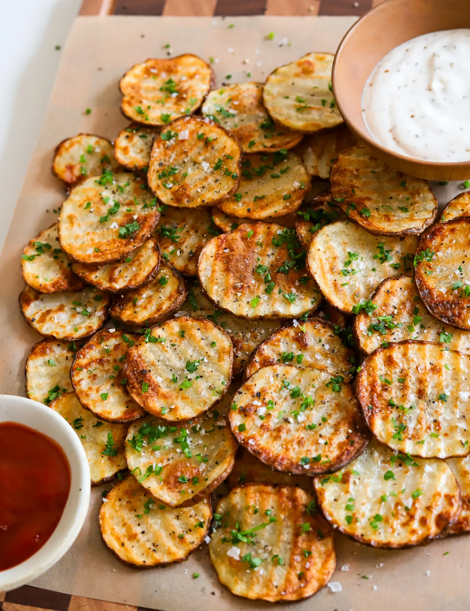

For all my chocolate lovers, these mousse cups are the ultimate silky,
rich, spoon-worthy treat. They look fancy but come together with just a
few simple steps and a quick chill. Every bite is light, creamy, and so
chocolatey and I have a feeling you're going to be obsessed.
Ingredients
Crust
20 Oreos
4 tablespoons unsalted butter, melted
CHOCOLATE MOUSSE
1 cup heavy cream
2 tablespoons unsalted butter
3 to 4 tablespoons granulated sugar
6 ounces semi-sweet chocolate, chopped
1/2 teaspoon espresso powder
1/2 tablespoon vanilla extract
pinch of salt
3 large egg yolks
1/2 cup heavy cream
CHANTILLY CREAM
3/4 cup heavy cream
3 tablespoons powdered sugar
1/2 teaspoon vanilla extract
Instructions
Crust
Add the Oreos to a food processor and pulse until very fine
crumbs form.
Transfer the crumbs to a mixing bowl. Pour in the melted butter
and mix until the texture feels like wet sand.
Cover the bowl and set aside.
CHOCOLATE MOUSSE
Place the chopped chocolate in a medium heat-safe bowl.
In a small saucepan over medium-low heat, add the heavy cream,
butter, and sugar. Whisk until the mixture is hot and the sugar
is dissolved, but do not let it boil.
Pour the hot cream mixture over the chocolate, cover the bowl,
and let it sit undisturbed for 10 minutes.
Uncover and whisk from the center outward until completely
smooth and glossy. Let it cool slightly so it's warm but not
hot.
Whisk in the egg yolks until fully combined.
Add the espresso powder, vanilla extract, and a tiny pinch of
salt, then whisk again until smooth.
In a separate bowl, whip the chilled heavy cream with a hand
mixer or whisk until soft peaks form.
Add the whipped cream to the chocolate mixture in batches,
gently folding after each addition until the mousse is light
and airy.
Cover the mousse, trasnfer to the fridge, and set aside.
CHANTILLY CREAM
In a clean bowl, add the heavy cream, powdered sugar, and vanilla
extract.
Whip with a hand mixer or whisk until soft peaks form.
Assemble
Add a few spoonfuls of the crust mixture to the bottom of each cup
and press down lightly to form an even layer.
Spoon or pipe the chocolate mousse on top so each cup fills about
two-thirds to three-quarters of the way up.
Finish the remaining space with Chantilly or whipped cream.
Enjoy right away, or cover each jar and refrigerate for up to 3
days.
Side Dish | Snack

Ripple Fries-Sweet Green Copycat
These ripple fries are my take on the viral Sweetgreen ones but made at
home and even better. They're crispy on the outside, soft on the inside,
and made in the air fryer without the mess of deep frying. Just a few
simple ingredients and you've got the perfect crispy snack or side dish.
Prep time:20 mintues Cook time:25 minutes Total time
45 minutes Yields:4
Ingredients
1 1/2 pounds russet potatoes (2 medium potatoes)
3 tablespoons avocado oil
1 tablespoon cornstarch
1/2 teaspoon salt
1/4 teaspoon black pepper
Instructions
Start by washing your potatoes, scrubbing them well. We'll be
keeping the skins on for an authentic copycat but if you prefer it
without, just peel the potatoes.
Slice the potatoes using a crinkle cutter into pieces just a little
under 1/4 inch thick. Place the slices in a bowl of cold water and
let them soak for at 20 to 30 minutes — this helps make them extra
crispy. After soaking, drain and pat them completely
dry with a clean towel.
Toss the potato slices with avocado oil, cornstarch, salt, and black
pepper until everything is evenly coated.
Preheat your air fryer to 375°F and add the fries in a single layer,
preferabbly on a wire rack so air can circulate. This will depend on
the style of air fryer you have.
Air fry for 20 to 25 minutes, flipping halfway through. Spray with a
little more avocado oil while they cook if needed, until golden
brown and crisp.
Serve hot with your favorite dipping sauce!
Breakfast
Ripple Fries-Sweet Green Copycat
These ripple fries are my take on the viral Sweetgreen ones but made at
home and even better. They're crispy on the outside, soft on the inside,
and made in the air fryer without the mess of deep frying. Just a few
simple ingredients and you've got the perfect crispy snack or side dish.
Prep time:25 mintues Cook time:25 minutes Total time
45 minutes Yields:6
Ingredients
1/2 cup whole milk
1/2 cup heavy cream
1 teaspoon vanilla bean paste
2 to 3 teaspoons instant espresso or coffee
Pinch of salt
1/4 cup granulated white sugar
3 egg yolks
WHIPPED WHITE CHOCOLATE MASCARPONE
3 ounces white chocolate
1/2 cup heavy cream, heated
1/2 cup mascarpone
1 cup heavy cream
1 teaspoon vanilla extract
2 tablespoons powdered sugar
FRENCH TOAST
6 to 7 thick slices brioche bread
3/4 cup half-and-half
2 large eggs
1 tablespoon white or brown sugar
1 teaspoon vanilla extract
Unsalted butter, for cooking (about 3 to 4 tablespoons total)
Other
Cocoa powder for dusting
Instructions
MAKE THE COFFEE ANGLAISE
In a bowl, whisk the egg yolks and granulated sugar together until
the mixture lightens in color and becomes slightly thick.
In a saucepan over medium heat, warm the milk, heavy cream, vanilla
bean paste, instant espresso, and salt until steaming but not
boiling.
Slowly stream the warm milk mixture into the yolk mixture while
whisking constantly.
Return everything to the saucepan and cook over medium-low heat,
whisking constantly, until the anglaise thickens slightly and coats
the back of a spoon.
Remove from heat and use warm or at room temperature.
MAKE THE WHITE CHOCOLATE WHIPPED MASCARPONE
Place the white chocolate in a heatproof bowl and pour the hot heavy
cream over it. Let sit briefly, then stir until smooth.
Once slightly cooled, add the mascarpone and mix until fully
combined.
In a separate bowl, whip the heavy cream with the vanilla extract
and powdered sugar until soft peaks form.
Gently fold the whipped cream into the mascarpone mixture until
light, smooth, and fluffy. Chill until ready to use.
Cook the French Toast
In a shallow bowl, whisk together the half-and-half, eggs, sugar,
and vanilla extract.
Dip each slice of brioche into the mixture, letting it soak briefly
on each side without oversaturating.
Heat a skillet over medium heat and melt about 1 tablespoon
butter.
Cook the French toast for 2½ to 3 minutes per side, until deeply
golden and cooked through.
Transfer cooked slices to a wire rack to keep them crisp while you
finish the remaining batches, adding more butter as needed.
Assembly
Place the warm French toast on a plate.
Pipe the whipped mascarpone on top, or add a generous dollop with a
spoon and gently spread.
Pour the coffee anglaise around the French toast on the plate.